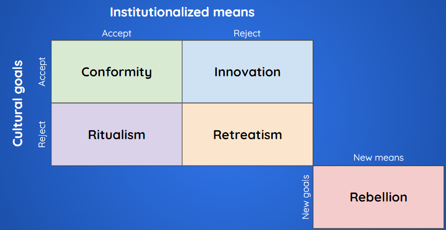

|
Deviants and Robert Merton’s Social Strain Typology
|
Merton distinguished five types of deviance:
Accordion
This type of deviance involves individuals adhering to both the cultural goals and the approved means of achieving them. In other words, they accept the societal norms and strive to achieve success through legitimate channels.
In contrast to conformity, ritualism occurs when individuals abandon the pursuit of societal goals while continuing to follow the established means. They may go through the motions of adhering to social norms but lack motivation or ambition to achieve the desired goals.
Innovation involves accepting societal goals but pursuing them through unconventional or illegal means. Individuals in this category may seek success and social status but resort to activities considered deviant or criminal to attain their objectives.
Retreatism occurs when individuals reject both societal goals and the means to achieve them. They withdraw from mainstream society and may adopt alternative lifestyles or engage in substance abuse as a way of coping with their disconnection from societal norms.
This type of deviance is characterized by rejecting societal goals and means while actively seeking to replace them with alternative goals and means. Individuals in this category challenge existing social structures and norms, advocating for radical changes to the status quo.
| These five types of deviance offer insight into the various ways individuals respond to societal expectations and pressures, highlighting the complexity of human behavior within social systems. |
Merton’s Deviance Typology

|
Bill Gates
Mark Zuckerberg
|